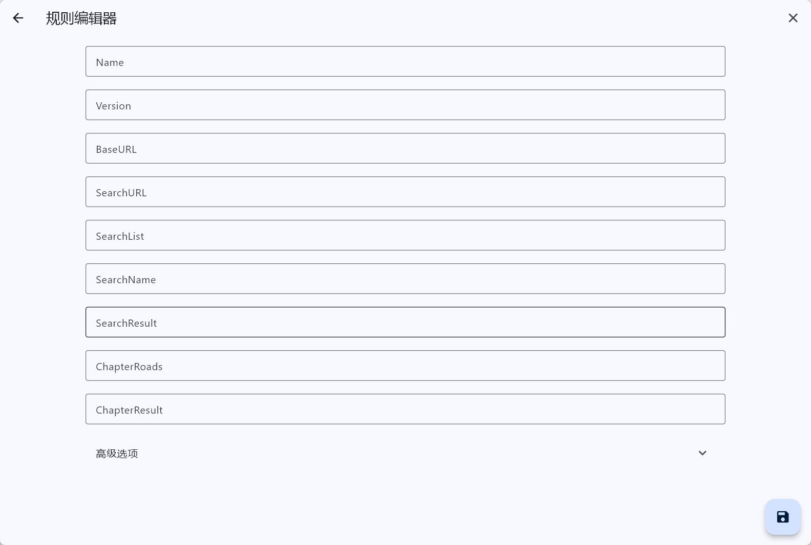
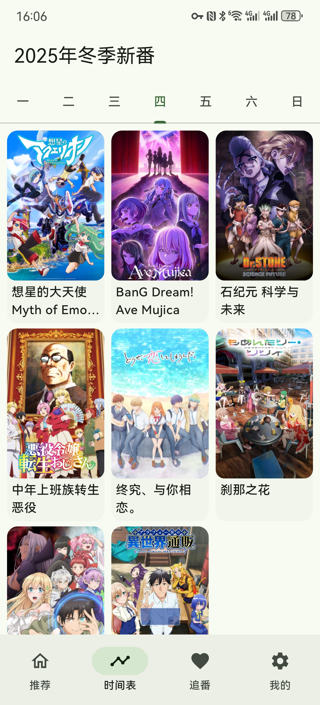

Kazumi 这三年：从三条内置规则到规则驱动的追番框架
一个开源追番应用的迭代观察——从出厂示例到社区规则生态，团队到底在死磕什么，又在刻意忽略什么。
现在从 Kazumi下载 拿到安装包装好，打开后进「我的 → 规则管理」，你会看到三条预置的内置规则躺在列表里。它们能跑通一个最小闭环——搜一部番、点开、能播——但仅此而已。想看的大部分番搜不到，这不是应用坏了，是这三条规则从来不是给你「用」的，是给你「验」的。它们是出厂测试件，也是写作模板。
我第一次注意到 Kazumi官网，是因为它在追番圈子里的定位很微妙：不是视频播放器，不是番剧数据库，甚至不是番剧聚合站——它是一个规则引擎。你给它喂 XPath 规则，它帮你把散落在各个角落的番剧源统一拉进一个界面。这种设计在开源追番软件里不算独创，但 Kazumi 把它推到了一个极端：几乎所有功能都围绕规则展开。
它从哪起步：三条规则的骨架
样本文档没提的早期历史其实很有意思——恰恰说明它的起点有多朴素。最早版本的 Kazumi，核心逻辑就是「拿 XPath 定位 → 拼结果 → 喂给播放器」。三条内置规则对应三个常见站点，用最短的路径演示完这个链路的每个环节：搜索列表怎么框、番名怎么取、跳转链接指哪、线路和集数怎么扒。
这个骨架一直没丢。哪怕现在加了时间表、追番标记、云同步这些外围功能，你把它们全关掉，应用仍然能靠三条规则跑起来。这种「核心极简、外围叠层」的设计取向，在版本迭代里反复出现——团队似乎不愿意在核心链路上做任何妥协。

关键转折：从「播放器」到「追番框架」
真正的转折点大概是在时间表功能加入的那个版本。之前的 Kazumi 是个「找片 → 播放」的单向工具；时间表把它变成了「规划 → 追更 → 归档」的闭环。
时间表的设计细节暴露了团队的取舍逻辑：数据来自 Bangumi 的放送信息，与视频源解耦。它只告诉你「今天有什么更新」，能不能立刻看到、用哪条规则看到，是规则池的事。这个解耦太关键了——把「找片」和「看片」拆成两个独立层，意味着其中一层迭代时另一层不用跟着改。后来追番标记的「想看 → 在看 → 看过」流转，也是建立在这个 Bangumi 资料层之上的。
近期版本加的「按放送季度切换」，进一步强化了这个框架感：时间表不再只是一个周视图，而是一个季度级的规划面板。新番季开播前先按季度浏览、标记想看，每周按星期栏跟进更新，季末批量整理标记——这个节奏如果不跨三四个版本的迭代，是不可能设计出来的。
迭代节奏里藏着的优先级
回头看这几年的更新，有一条主线非常清晰：规则生态是团队一直在死磕的事，而应用内体验的打磨明显慢半拍。
死磕的部分：翻 Kazumi文档 能看到内置规则的字段设计在每个版本都有微调（SearchList、SearchName、SearchResult、ChapterRoads、ChapterResult——这五个字段的命名和层级关系就改了不止一次）；规则仓库的导入、排序、删除、失效检测这些配套功能一直在补；XPath 写法的容错性逐步提升——早期版本 XPath 写错一个节点直接崩，现在会给出具体是哪一步没框到。
刻意忽略的部分：侧载安装这件事，文档花了大量篇幅讲 Sideloadly 的七天签名、Apple ID 限制、Windows 版 iTunes 的坑——但应用本身没有提供任何简化安装的尝试。iOS 用户的侧载路线有 LiveContainer + SideStore，Windows 用户必须装经典版 iTunes 而不是商店版——这些都是外部依赖的繁琐，应用本体没有试图解决。这种选择很有意思：团队不想在分发渠道上花精力，只想把能在规则引擎里解决的问题做到极致。
规则体系本身也有明显的优先级排序。示例规则始终保持三条，覆盖面极窄，官方从不追求让内置规则能直接用；反而把最复杂的 XPath 写法、最灵活的字段决策、最棘手的失效处理全留给了社区。应用的规则管理页面做得足够好：每条规则在单部番上的搜索结果独立展示、多条规则互补比死磕一条全功能规则更推荐——这些设计都在鼓励社区贡献而不是官方自己扛。

从迭代规律能推的下一步
照这个路线走，下一步大概率是规则生态的进一步平台化，而不是应用内功能的大幅扩容。几个信号：
第一，时间表和追番标记都已经建立在 Bangumi 资料层上了，接下来可能会开放更多资料源的接入——比如漫画、小说，逻辑和番剧是一样的：资料层解耦，规则层按需接入。
第二，规则的失效处理目前还是「自己删掉换新」，但应用已经能检测到规则搜不出结果了——差的就是一个批量检测和社区同步的机制。如果官方做了规则失效的自动标记和社区推荐替换，那整个规则生态的自循环就真正跑起来了。
第三，多设备同步。文档里完全没提同步，但从云与伙伴这个章节标题来看，团队已经在规划这一块了。一旦规则能跨设备同步，加上 Bangumi 的账号体系，Kazumi 会从一个单端工具变成真正的「规则驱动的追番框架」。
但我也没太乐观——团队对分发渠道和安装体验的刻意忽略，决定了它永远不会成为大众产品。这种定位很像一个技术爱好者的作品：核心机制做得扎实，外围体验留给用户自己解决。从三条内置规则到今天这套框架，团队的选择始终一致：把规则引擎打磨到极致，让社区自己长出生态。
至于那三条内置规则？它们会一直在那——作为最小验证链路、作为 XPath 写法的活模板，提醒每一个新用户：这个应用的核心，不在它有多少功能，而在你能给它喂出什么样的规则。